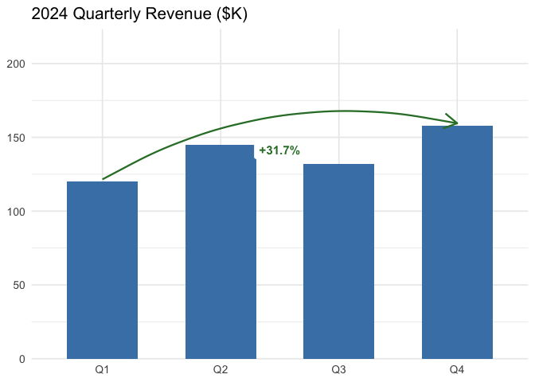
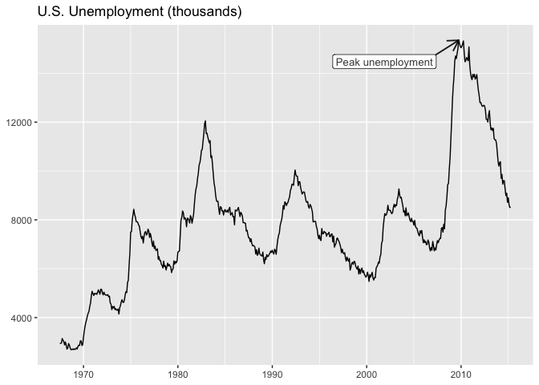
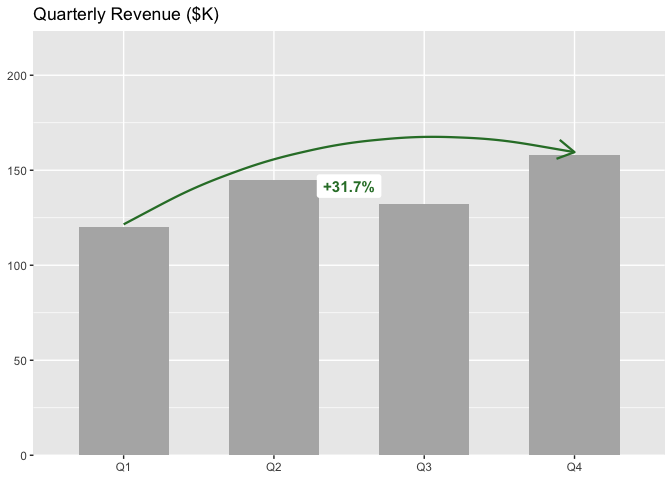
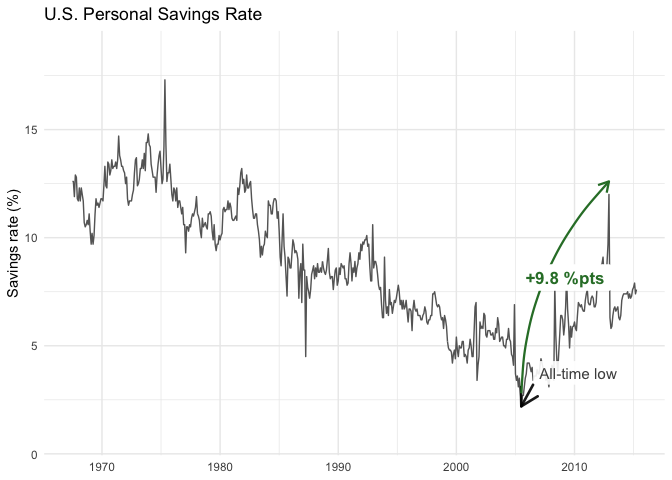

Add arrows, labels, and change annotations to ggplot2 business charts in one line of code.

Overview
| You want to… | Use |
|---|---|
| Point at a data point with an arrow and label | annotate_callout(data, where = year == 2024, label = "Peak") |
| Show percent change between two rows | annotate_change(data, from = ..., to = ..., value = sales) |
| Show absolute difference | annotate_change(..., format = "absolute") |
| Show change in percentage points | annotate_change(..., format = "points") |
| Use custom colors | annotate_change(..., colors = c(up = "#1B9E77", down = "#D95F02", flat = "#999")) |
Without ggmemo, annotating a ggplot2 chart means hardcoding coordinates, computing deltas, formatting labels, and choosing colors — roughly 10 lines of manual work per annotation. ggmemo replaces that with a single function call.
Installation
# install.packages("pak")
pak::pak("lindsay-lintelman/ggmemo")Examples
Callout annotation
Point at a specific data row with an arrow and label:
library(ggplot2)
library(ggmemo)
ggplot(economics, aes(x = date, y = unemploy)) +
geom_line() +
annotate_callout(
economics,
where = date == as.Date("2009-10-01"),
label = "Peak unemployment",
position = "bottom-left"
) +
labs(title = "U.S. Unemployment (thousands)", x = NULL, y = NULL)
Change annotation
Show the delta between two data points with a color-coded arrow:
quarterly_revenue <- data.frame(
quarter = factor(c("Q1", "Q2", "Q3", "Q4"),
levels = c("Q1", "Q2", "Q3", "Q4")),
revenue = c(120, 145, 132, 158)
)
ggplot(quarterly_revenue, aes(x = quarter, y = revenue)) +
geom_col(fill = "grey70", width = 0.6) +
annotate_change(
quarterly_revenue,
from = quarter == "Q1",
to = quarter == "Q4",
value = revenue
) +
labs(title = "Quarterly Revenue ($K)", x = NULL, y = NULL)
Time series with both annotations
ggplot(economics, aes(x = date, y = psavert)) +
geom_line(colour = "grey40") +
annotate_callout(
economics,
where = date == as.Date("2005-07-01"),
label = "All-time low",
nudge = c(365, 1)
) +
annotate_change(
economics,
from = date == as.Date("2005-07-01"),
to = date == as.Date("2012-12-01"),
value = psavert,
format = "points"
) +
labs(
title = "U.S. Personal Savings Rate",
x = NULL, y = "Savings rate (%)"
) +
theme_minimal()
Learning more
-
vignette("narrating-business-charts")— full walkthrough with customization, multiple annotations, and common mistakes. -
?annotate_calloutand?annotate_change— function reference with all arguments and examples.
Related packages
ggmemo is focused on callout and change annotations for business charts. For other annotation needs:
- ggpp — precise annotation positioning with NPC coordinates. ggmemo is built on ggpp.
- ggrepel — automatically reposition text labels to avoid overlaps.
- ggannotate — interactively annotate plots in RStudio.
Code of Conduct
Please note that ggmemo is released with a Contributor Code of Conduct. By contributing, you agree to abide by its terms.